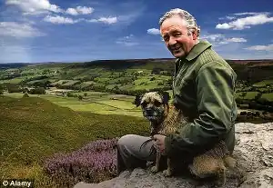

Джеймс")

Джеймс Херріот (справжнє ім'я Джеймс Альфред Вайт) народився 3 жовтня 1916 року у містечку Сандерленд (Велика Британія) у сім'ї Джеймса та Ганни Белл Вайт. Коли Джеймсу було три тижні, його батьками переїхали до міста Глазго у Шотландії, де батько отримав роботу піаністом у місцевому кінотеатрі, а мати стала співачкою. Там він прожив майже 20 років. Навчався у Йоркерській початковій школі з 1921 по 1928 рр. та у Гіллхедській вищій школі м. Глазго з 1928 по 1933 рр.
У 23 роки, по закінченні у 1939 році Ветеринарного коледжу м. Глазго, здобув професію ветеринарного хірурга. Розпочав ветеринарну практику в 1940 році спочатку у Сандерленді, а згодом переїхав до містечка Тірск (Thirsk), у Північному Йоркширі, долучившись до ветеринарної практики Дональда Сінклера і там залишився на усе своє життя. Там, у 1945 році, він одружився з Джоан Кетрін Андерсон Денбері, і в них народилося двоє дітей — Джеймс Александр (Джим) у 1943 (який також став ветеринаром та партнером батька по практиці) та Розмарі (Розі) у 1947, яка стала лікарем. Джим і зараз практикує у Тірску, а ось дочка, яка пропрацювала терапевтом у Тірску багато років, вже на пенсії.
З 1940 по 1942, Вайт служить у Королівських Повітряних силах. На цей час його дружина переїжджає до своїх батьків, а Вайт, по закінченні служби, їде до неї. Там вони проживуть до 1946 року, потім переїжджають до Кіркгейту і будуть жити там до 1953 року. Пізніше Вайт із дружиною повертаються у Тірск, а згодом перебираються до селища Сірлбі, за 4 милі від Тірська, де Вайт проживе до кінця життя. Багато років Альфред Вайт збирався написати книгу про будні сільського ветеринара та кумедні історії, які з ним трапилися, однак практика та сім'я забирали весь час. Сам Вайт розказував, що багато років докучав дружині за обідом оповідками про кумедні випадки у практиці і обіцяв коли-небудь написати книгу. Книга навіть стала ходячим жартом у сім'ї. Одного разу дружина сказала: "Я не хочу тебе образити, але ти вже 25 років розказуєш про книгу. Між тим, ти ніколи вже її не напишеш, бо літні ветеринари у віці 50-ти років не пишуть книг". Так, у 1966 році, у свої 50 років, він таки взявся до написання. Перші дві книги не знайшли інтересу серед видавців (вони були не про тварин), а ось третя, яка називалась "Якби тільки вони могли говорити" (англ. If Only They Could Talk), була надрукована у Великій Британії у 1969 році. Однак продаж був слабким, поки у Нью-Йорку перші дві книги не були видані одним томом. Нова книга, що називалась "Про всіх створінь, великих і малих" (англ. All Creatures Great and Small), мала неочікуваний успіх та породила шість перевидань (4 з яких були за межами Великої Британії), фільми та успішну телеверсію. Реалістичні замальовки з життя англійської провінції та буденного життя лікаря-ветеринара, були сповнені непідробної любові до тварин та гумору. Герріот ставав популярним та відомим не тільки на батьківщині, а й за межами Великої Британії. Ранні твори письменника були згодом зведені до збірок американськими видавництвами (радянський варіант перекладу) "Про всіх створінь — великих і малих" (англ. All Creatures Great and Small, 1972), "Про всіх створінь — красивих і прекрасних" (англ. All Things Bright and Beautiful, 1974), "Про всіх створінь — розумних і дивовижних" (англ. All Things Wise and Wonderful, 1977). У 1974 році на екрани вийшов фільм за мотивами його творів "Про всі створіння — великі й малі", знятий режисером Клодом Вотемом, а через 4 роки стартував й серіал з однойменною назвою, що мав великий успіх протягом кількох років. У 1979 році Герріот був нагороджений орденом Британської імперії та почесного докторського ступеню Единбурзького університету. 1982 року він здобув звання почесного члена Королівського ветеринарно-хірургічного коледжу, а 1983 року став почесним доктором ветеринарних наук Ліверпульського університету. Помер Джеймс Альфред Вайт у 1995 році від раку, перебуваючи на лікуванні у місцевому госпіталі у Тірску. Йому було 78 років. Після смерті письменника в його будинку був створений музей, який носить назву "Світ Джеймса Герріота".